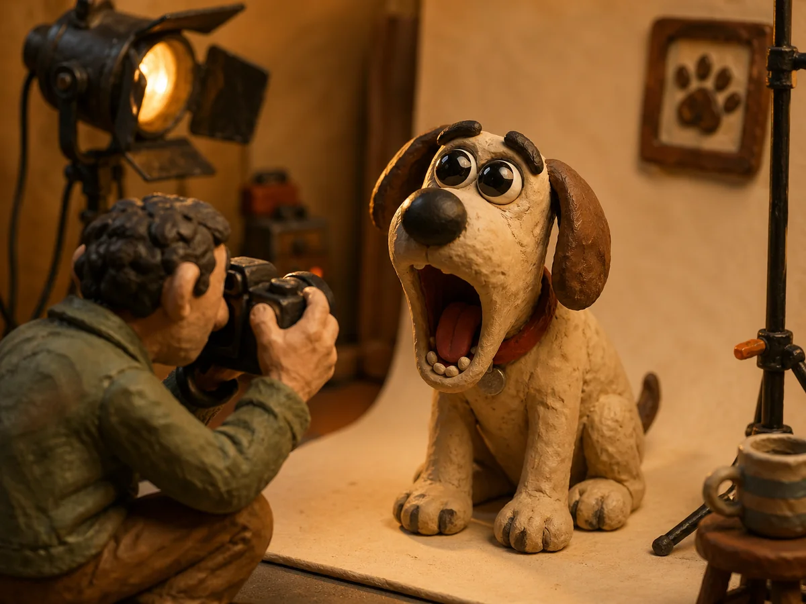

수아는 진료실 의자 끝에 걸터앉아 있었다. 무릎 위에는 감자가 얌전히 엎드려 있었지만, 그 두 눈은 도무지 얌전하지 않았다. 어제 아침까지 평범했던 두 눈이 오늘은 탁구공 두 개처럼 부풀어 있었다.
[Sua sat on the edge of the exam room chair. Gamja lay quietly on her lap, but his two eyes were doing nothing of the sort. The two eyes that had been ordinary yesterday morning were now puffed up like two ping pong balls.]
감자는 자기 눈이 얼마나 커졌는지 모르는 것 같았고, 그게 문제를 더 우습게 만들었다.
[Gamja didn’t seem to know how big his own eyes had become, which made the problem funnier.]
“음, 만성 결막부종이네요.” 수의사 선생님은 컴퓨터 화면을 들여다보며 말했다. 마치 날씨를 알려 주는 사람처럼 무덤덤한 목소리였다. “약 며칠 드시면 통증은 금방 사라집니다.”
[”Mm. Chronic conjunctival edema.” The vet looked at his computer screen as he spoke. His voice was as flat as someone reading a weather forecast. “A few days of medication and the pain will go away quickly.”]
“그럼 눈은요?” 수아가 물었다.
[”And his eyes?” Sua asked.]
“눈은 그대로 남습니다.” 수의사 선생님은 펜으로 차트를 톡톡 두드렸다. “이건 평생 갑니다.”
[”His eyes will stay this way.” The vet tapped the chart with his pen. “This is for life.”]
수아는 잠시 말을 잃었다. 평생이라는 단어가 진료실 형광등 아래에서 묘하게 길게 울렸다. 감자는 아무것도 모른 채 꼬리를 한 번 흔들었다. 꼬리 끝이 수아의 무릎을 부드럽게 두드렸다.
[Sua lost her words for a moment. The word “for life” rang strangely long under the exam room fluorescent light. Gamja, knowing nothing, gave his tail one wag. The tip of it patted Sua’s knee gently.]
“그래도 아프지 않다면,” 수아는 천천히 말했다, “괜찮은 건가요?”
[”If he isn’t in pain,” Sua said slowly, “then is he okay?”]
“네, 본견은 멀쩡합니다.” 수의사 선생님이 처음으로 살짝 미소를 보였다. “사실 지금도 본견은 멀쩡한 표정이잖아요.”
[”Yes, the patient is fine.” The vet smiled faintly for the first time. “Honestly, even right now the patient looks fine.”]
수아는 감자를 내려다보았다. 감자는 의자 모서리를 핥고 있었다. 두 눈은 천장 형광등을 그대로 비추고 있었다. 마치 작은 거실 조명 두 개가 강아지 얼굴 위에 박혀 있는 것 같았다.
[Sua looked down at Gamja. Gamja was licking the corner of the chair. His two eyes reflected the ceiling lights perfectly. It looked as if two small living room lamps had been embedded in a dog’s face.]
진료실을 나서자마자 수아는 첫 번째 사람을 만났다. 정확히 말하면, 첫 번째 사람이 감자를 만난 것이었다. 동물병원 자동문 앞에서 한 아주머니가 손에 들고 있던 비닐봉지를 그대로 떨어뜨렸다.
[As soon as they stepped out of the exam room, Sua met the first person. To be precise, the first person met Gamja. In front of the animal hospital’s sliding doors, an older woman dropped the plastic bag she had been holding.]
“어머나 세상에.” 아주머니는 무릎을 굽혔다. “이 강아지 좀 봐. 눈이 어쩜 이렇게 커?”
[”Oh my goodness.” The woman bent her knees. “Look at this puppy. How can his eyes be so big?”]
“사실 결막에…” 수아가 말을 시작했지만,
[”Actually, in his conjunctiva…” Sua tried to begin, but]
“아유, 너무 귀여워. 사진 한 장만 찍어도 돼요?”
[”Aww, so cute. Can I take just one photo?”]
수아가 대답하기도 전에 아주머니의 휴대폰이 벌써 감자 앞에 있었다. 감자는 카메라 앞에서 어떻게 행동해야 하는지 배운 적이 없었지만, 다행히 그럴 필요도 없었다. 감자는 그냥 가만히 있기만 해도 영상이 되었다.
[Before Sua could answer, the woman’s phone was already in front of Gamja. Gamja had never learned how to behave in front of a camera, but luckily he didn’t need to. Gamja became video footage just by sitting still.]
집까지 가는 길 동안 수아는 정확히 일곱 번 멈췄다. 횡단보도에서 한 번. 편의점 앞에서 두 번. 아파트 단지 입구에서 두 번. 엘리베이터 안에서, 같은 층에 사는 모르는 분에게, 두 번 더.
[On the way home Sua stopped exactly seven times. Once at the crosswalk. Twice in front of the convenience store. Twice at the entrance of her apartment complex. Two more times in the elevator, with a neighbor she didn’t even know.]
매번 같은 대본이었다. 어머나, 너무 귀여워, 사진 한 장만요. 수아는 점점 설명하기를 포기했다. 어차피 아무도 듣고 있지 않았다. 사람들은 이미 촬영 중이었다.
[Every time the script was the same. Oh my, so cute, just one photo. Sua slowly gave up on explaining. No one was listening anyway. People were already filming.]
집에 도착했을 때 감자는 자신이 이미 인터넷에서 유명해지고 있다는 사실을 몰랐다. 수아도 몰랐다. 신발을 벗고 감자에게 물그릇을 채워 주는 동안, 누군가 편의점 앞에서 찍은 영상은 이미 어떤 SNS 계정에 올라가 있었다.
[By the time they got home, Gamja didn’t know he was already becoming famous on the internet. Sua didn’t know either. While she took off her shoes and refilled Gamja’s water bowl, the video someone had taken in front of the convenience store was already up on a social media account.]
영상의 제목은 단순했다. “이 강아지 눈 좀 보세요.” 댓글은 백 개에서 시작해 천 개로 늘어났다. 두 시간 만에 만 개가 되었다.
[The title of the video was simple. “Look at this puppy’s eyes.” Comments started at one hundred and grew to a thousand. Within two hours they reached ten thousand.]
사람들은 누가 시키지도 않았는데 해시태그를 만들었다. #감자눈. 정확히 누가 처음 그 이름을 붙였는지는 아무도 몰랐다. 인터넷이 알아서 그렇게 정해 버렸다.
[Without anyone telling them, people made a hashtag. #GamjaEyes. No one knew exactly who first attached that name. The internet had decided on its own.]
수아가 그 영상을 본 것은 저녁 아홉 시쯤이었다. 라면을 끓이려고 부엌에 서 있다가 휴대폰이 갑자기 뜨거워지기 시작했다.
[Sua saw the video around nine in the evening. She was standing in the kitchen about to make ramyeon when her phone suddenly began to feel hot.]
알림창이 화면을 가득 채우는데 위에서 아래로 내려도 끝이 보이지 않았다. 새 팔로워. 새 팔로워. 새 팔로워. 새 디엠. 새 디엠. 누군가 자기 아이 이름을 감자로 짓고 싶다고 했다.
[Notifications filled the screen, and no matter how far she scrolled there was no end. New follower. New follower. New follower. New DM. New DM. Someone said they wanted to name their child Gamja.]
수아는 가스레인지를 끄고 그대로 거실 바닥에 앉았다. 감자는 옆에 와서 코로 수아의 손등을 살짝 밀었다. 자기 눈이 텔레비전이 되었다는 사실을 모르는 작은 강아지가, 평소처럼 밥을 달라고 하고 있었다.
[Sua turned off the gas burner and sat down on the living room floor. Gamja came over and gently nudged the back of her hand with his nose. A small dog who didn’t know his eyes had become a television was, as always, asking for dinner.]
이튿날 아침에 깨어났을 때 수아의 팔로워는 오만 명이었다. 그날 점심 무렵에는 십만 명이었다. 수아는 한 손으로 토스트를 들고, 다른 손으로 디엠을 내리고 있었다.
[The next morning when Sua woke up, her followers were at fifty thousand. By lunchtime that day they were at one hundred thousand. Sua held toast in one hand and scrolled DMs with the other.]
어떤 펫푸드 회사가 협찬을 제안했다. 어떤 카메라 브랜드가 무상 제공을 약속했다. 어떤 패션 회사는 강아지 옷이 없는데도 갑자기 강아지 라인을 만들겠다고 했다.
[A pet food company offered sponsorship. A camera brand promised free equipment. A clothing company that didn’t even have a dog line said it would suddenly start one.]
가장 이상했던 디엠은 어떤 안약 회사에서 왔다. 자기네 안약은 감자에게 필요 없다는 걸 알지만, 그래도 같이 사진 한 장만 찍어 주실 수 있냐고 물었다. 수아는 그 메시지 옆에 작은 별표를 달아 두었다. 별표의 의미는 자신도 잘 몰랐지만, 어쨌든 별표를 달았다.
[The strangest DM came from an eye drop company. They said they knew their eye drops were not needed for Gamja, but could she still take just one photo with the bottle. Sua put a little star next to that message. She didn’t quite know what the star meant, but she put it there anyway.]
또 어떤 사람은 감자에게 팬레터를 보내겠다고 우편 주소를 물었다. 강아지에게 팬레터라니. 수아는 한참을 망설이다가 사서함 주소를 만들기로 했다. 일주일 뒤 사서함은 손편지 백 장으로 가득 찼다. 그중 두 장은 색종이로 접은 작은 강아지 모양이었다.
[One person asked for Gamja’s mailing address so they could send him a fan letter. A fan letter for a dog. Sua hesitated for a long time and then decided to set up a P.O. box. A week later the P.O. box was full of one hundred handwritten letters. Two of them were folded out of colored paper into the shape of a small dog.]
“감자야,” 수아가 식탁 아래에 누워 있는 감자를 불렀다. “너 이거 어떻게 생각해?”
[”Gamja,” Sua called to him as he lay under the kitchen table. “What do you think of this?”]
감자는 대답할 수 없었다. 그건 강아지였다. 그래도 꼬리는 두 번 흔들렸다. 수아는 그 꼬리짓을 동의로 받기로 했다. 그런 식의 결정이 가장 편했다.
[Gamja could not answer. He was a dog. Still, his tail wagged twice. Sua decided to take the wag as agreement. That kind of decision was the easiest.]
문제는 양심이었다. 수아는 디엠에서 협찬 금액을 보았을 때 잠깐 죄책감을 느꼈다. 자기 강아지가 병에 걸렸는데, 자기는 그걸 가지고 돈을 벌고 있는 게 아닐까.
[The problem was her conscience. When Sua saw the sponsorship amounts in the DMs, she felt a flash of guilt. Her dog had an illness, and she was making money off it, wasn’t she.]
그러나 양심은 길어야 사 분 정도 갔다. 사 분 후에 수아는 다음 달 월세 영수증을 떠올렸고, 양심은 조용히 자기 자리로 돌아갔다.
[But her conscience lasted four minutes at most. Four minutes later Sua remembered next month’s rent receipt, and her conscience quietly went back to its corner.]
수아는 답장을 쓰기 시작했다. 안녕하세요. 감자 인스타 계정 운영자입니다.
[Sua started writing a reply. Hello. I run Gamja’s Instagram account.]
일주일 뒤 수아는 다시 동물병원에 갔다. 이번에는 처음과 사정이 좀 달랐다. 대기실에 들어서자마자 접수원 분이 휴대폰을 꺼냈다. “어머, 감자 본인이세요? 진짜 그 감자?”
[A week later Sua went back to the animal hospital. This time things were a bit different from the first visit. The moment they stepped into the waiting room, the receptionist pulled out her phone. “Oh, are you Gamja in person? The real Gamja?”]
“네.” 수아가 웃었다. “본인입니다.”
[”Yes,” Sua laughed. “In person.”]
진료실에서 수의사 선생님은 감자의 눈을 천천히 살폈다. 빨간 부분이 다 사라져 있었다. 분비물도 깨끗했다. 약은 효과가 있었다.
[In the exam room the vet examined Gamja’s eyes slowly. The red parts had all disappeared. The discharge was gone too. The medication had worked.]
“통증은 없어졌습니다.” 수의사 선생님이 말했다. “이제 그냥 외형만 남는 거예요.”
[”The pain is gone,” the vet said. “Now only the appearance remains.”]
수아는 그 말을 듣고 한참 가만히 있었다. 마치 누가 나쁜 소식이 있다고 말해 놓고 갑자기 좋은 소식만 꺼내 놓은 것 같았다.
[Sua sat still for a while after hearing that. It felt as if someone had said they had bad news and then opened only good news.]
감자는 진료대 위에서 잠시 앉아 있다가 수의사 선생님 손등을 핥았다. 수의사 선생님은 의외로 부끄러워했다.
[Gamja sat on the exam table for a moment and then licked the back of the vet’s hand. The vet was unexpectedly embarrassed.]
“본견 성격은 변함없네요.” 선생님이 말했다.
[”His personality is the same as ever,” the vet said.]
“네, 변함없어요.” 수아가 대답했다.
[”Yes, the same as ever,” Sua replied.]
집으로 돌아오는 길에 수아는 감자를 한 번 안아 보았다. 가벼웠다. 평소대로였다. 두 눈만 평소가 아니었다.
[On the way home Sua picked Gamja up once. He was light. Same as always. Only his two eyes were not as always.]
그다음 한 달은 흐릿한 사진 같았다. 수아의 작은 원룸에는 택배 상자가 매일 도착했다. 강아지 간식. 강아지 셔츠. 강아지 모자. 어느 순간부터는 강아지 선글라스도 왔다.
[The next month was like a blurry photograph. Packages arrived at Sua’s tiny studio apartment every day. Dog treats. Dog shirts. Dog hats. At some point dog sunglasses started arriving too.]
선글라스 회사는 굉장히 진지하게 협업을 제안했다. 회의실에서 수아는 다리를 떨면서 계약서를 읽었다. 옆에 앉은 감자는 회의실 카펫 냄새를 맡고 있었다.
[The sunglasses company proposed a collaboration very seriously. In the meeting room Sua bounced her leg while reading the contract. Beside her, Gamja was sniffing the meeting room carpet.]
촬영 당일 사진작가는 감자를 보고 잠시 말을 잃었다. 그러더니 갑자기 두 손으로 자기 가슴을 누르며 “이 친구는 진짜 천재예요” 라고 말했다. 천재라기보다는 그냥 가만히 있는 강아지였지만, 사진작가의 의견은 존중되었다.
[On the day of the shoot, the photographer took one look at Gamja and lost his words. Then he suddenly pressed both hands to his chest and said, “This guy is a real genius.” It was less a genius and more a dog sitting still, but the photographer’s opinion was respected.]
문제는 선글라스가 감자 눈에 맞지 않는다는 점이었다. 정확히는, 감자 눈이 너무 커서 선글라스가 그 위에 머물지 못했다. 매번 안경다리가 미끄러져 코끝으로 흘렀다.
[The problem was that the sunglasses did not fit on Gamja’s eyes. Or rather, Gamja’s eyes were so large that the sunglasses could not stay on top of them. Every time, the temples slid down and ended up at the tip of his nose.]
감자는 짜증을 내지 않았다. 짜증 낼 줄 모르는 강아지였다. 그저 가만히 있었고, 안경은 가만히 있지 않았다.
[Gamja did not get annoyed. He was a dog who didn’t know how to be annoyed. He simply stayed still, and the sunglasses did not stay still.]
사진작가는 그래도 포기하지 않았다. 보조 한 명이 작은 핀셋으로 안경다리를 잡고 있는 동안, 다른 보조가 셔터를 눌렀다. 그러자 감자가 갑자기 하품을 했다. 큰 눈에 큰 입까지 더해진 그 사진은 나중에 굿즈가 되어 팔렸고, 같은 달 작은 머그컵 만 개가 일주일 만에 다 나갔다.
[The photographer still did not give up. While one assistant held the temples in place with a small pair of tweezers, another assistant pressed the shutter. Then Gamja suddenly yawned. That photo, big eyes plus big mouth, later became merchandise, and within the same month ten thousand small mugs sold out in a single week.]
결국 사진작가는 안경을 감자 머리 위에 얹기로 했다. 이마에 걸친 선글라스. 그게 그날 광고의 메인 컷이 되었고, 다음 주 광고판은 강남 지하철역 출구에 걸렸다.
[In the end the photographer decided to perch the sunglasses on top of Gamja’s head. Sunglasses on the forehead. That became the main shot of the day’s campaign, and the next week the ad was hanging at the Gangnam subway exit.]
수아는 출근하는 사람들 사이를 지나가며 자기 강아지의 얼굴을 올려다보았다. 감자는 광고판 위에서도 평소처럼 가만히 있었다. 두 눈은 출근길을 똑바로 보고 있었다.
[Sua walked between the commuters and looked up at her dog’s face. Even on the billboard, Gamja was as still as ever. His two eyes stared straight at the morning rush.]
밤늦게 수아는 가끔 침대 가에 앉아 감자가 자는 모습을 바라보았다. 감자는 아주 둥글게 몸을 말고 잤다. 두 눈은 절반쯤 감겨 있었지만, 절반밖에 감기지 않는 것이 자기 의지가 아니었다. 그게 그냥 그 강아지의 새 얼굴이었다.
[Late at night Sua sometimes sat on the edge of the bed and watched Gamja sleep. He curled himself up very round when he slept. His two eyes were half closed, but the fact that they only half closed was not by his choice. That was just this dog’s new face.]
“감자야,” 수아가 작게 말했다. “너 정말 괜찮은 거지?”
[”Gamja,” Sua said softly. “You’re really okay, right?”]
감자는 코로 살짝 숨을 내쉬었다. 자고 있었다. 대답이 없었지만, 그게 또 어떤 대답 같기도 했다.
[Gamja exhaled lightly through his nose. He was sleeping. There was no answer, but somehow the no answer felt like a kind of answer.]
수아는 자기가 이 강아지 덕분에 다음 학기 등록금을 낼 수 있게 됐다는 사실을 떠올렸다. 다음 학기뿐 아니라, 그다음 학기까지도. 그리고 가끔 사람들이 “감자야 사랑해” 라고 적어 보내는 디엠도 떠올렸다.
[Sua thought about how, thanks to this dog, she would be able to pay next semester’s tuition. And not only next semester, but the one after as well. She also thought about the DMs people sent saying “Gamja I love you.”]
강아지를 사랑한다고 말하는 사람들이 이렇게 많은 세상이라니. 수아는 그게 어쩐지 마음에 들었다.
[A world where this many people said they loved a dog. Somehow Sua liked that.]
감자가 잠결에 다리를 한 번 차더니, 다시 가만해졌다. 수아는 불을 껐다. 어둠 속에서도 감자의 두 눈은 살짝 빛났다. 그건 거의 발광 같았다. 수아는 그 빛을 보고 잠깐 웃었다.
[Gamja kicked once in his sleep and then went still again. Sua turned off the light. Even in the dark his two eyes glowed faintly. It was almost like phosphorescence. Sua looked at the glow and laughed for a moment.]
이야기는 평범한 화요일에 끝난다. 점심을 먹고 디엠을 정리하던 수아는 어느 메시지에서 멈췄다. 보내는 사람은 강남의 어느 피부과였다.
[The story ends on an ordinary Tuesday. After lunch, while clearing her DMs, Sua stopped at one message. The sender was a dermatology clinic in Gangnam.]
“안녕하세요. 혹시 본인도 강아지처럼 큰 눈에 관심 있으신가요? 특별 패키지를 안내해 드립니다.”
[”Hello. Are you also interested in big eyes like a puppy’s? Let us tell you about our special package.”]
수아는 그 문장을 두 번 읽었다. 그리고 세 번 읽었다. 그리고 휴대폰을 엎어 놓았다.
[Sua read that sentence twice. Then a third time. Then she turned her phone face down.]
거실 가운데에 감자가 앉아 있었다. 두 눈은 형광등 두 개를 그대로 비추고 있었다. 감자는 자기 인생의 어느 부분도 의심하지 않는 표정이었다.
[In the middle of the living room Gamja was sitting. His two eyes reflected the two fluorescent lights perfectly. He had the expression of a creature who did not doubt any part of his own life.]
자기 눈이 광고판이 되든, 해시태그가 되든, 또는 새 의료 시술의 광고 도구가 되든, 감자에게는 다 똑같았다. 밥은 정해진 시간에 나왔고, 산책은 매일 했고, 통증은 더 이상 없었다.
[Whether his eyes became a billboard, a hashtag, or a marketing tool for a new medical procedure, to Gamja it was all the same. His meals came at scheduled times, his walks happened every day, and the pain was no longer there.]
“감자야,” 수아가 말했다. “너 정말 인생 잘 살고 있다.”
[”Gamja,” Sua said. “You really are living life well.”]
감자는 꼬리를 한 번 흔들었다. 그게 그 작은 왕자가 자기 왕국을 인정하는 방식이었다. 수아는 휴대폰을 다시 뒤집었다. 피부과 디엠을 가만히 보다가, 천천히 차단 버튼을 눌렀다. 차단할 때 작은 팝업이 떴다. “정말 차단하시겠습니까?” 수아는 정말 차단했다.
[Gamja wagged his tail once. That was how the small prince acknowledged his kingdom. Sua flipped her phone back over. She looked at the dermatology DM for a moment, and then slowly tapped the block button. A small pop up appeared as she blocked them. “Are you sure you want to block this user?” Sua was sure.]
차단을 누른 다음 수아는 감자에게 다가가 그 둥근 머리를 한 번 쓰다듬었다. 감자는 손길을 기다리고 있었던 것처럼 머리를 살짝 들었다. 두 눈은 여전히 두 눈이었다. 평생 그럴 거였다. 그리고 그게, 어쩐지, 모두에게 좋은 일이었다.
[After tapping block, Sua walked over to Gamja and stroked his round head once. Gamja lifted his head slightly, as if he had been waiting for the touch. His two eyes were still his two eyes. They would be that way forever. And somehow, that was a good thing for everyone.]
그리고 모두가 행복했다. 적어도 그날 오후에는.
[And everyone was happy. At least that afternoon.]
여러분, 잠시 글을 멈춰야 할 것 같아요. 다음 주에 제가 눈 수술을 받게 됐거든요. 감자처럼 눈이 커지는 수술은 아니에요. 아쉽게도. 그래도 회복하는 동안 블로그는 최소 이 주 정도 쉴 예정입니다. 돌아올 때 새 이야기랑 같이 인사드릴게요. 그동안 건강하시고, 감자처럼 눈도 잘 챙기세요.
[Friends, I have to pause for a little while. Next week I’ll be getting eye surgery. Not the kind that makes my eyes huge like Gamja’s, sadly. Still, while I recover the blog will be off for at least two weeks. I’ll come back with a new story and say hello then. Take care, and look after your eyes too, Gamja style.]